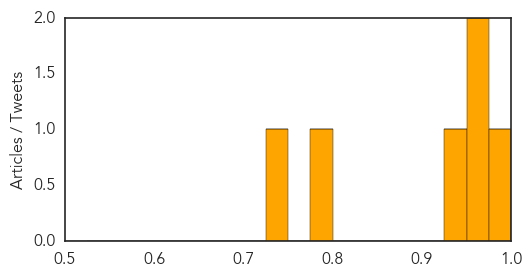
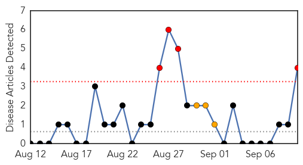
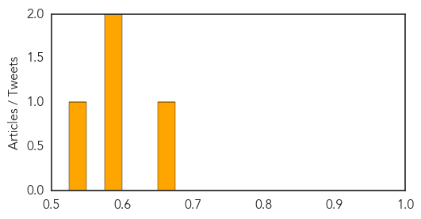

MERS
30-Day Web Trend
0 alerts, 1 warnings

30-Day Twitter Trend
3 alerts, 0 warnings

Article Locations

Article Confidences
Top Articles:
- 0.998
- Saudi Arabia, Jordan report more MERS cases
- 0.957
- Hajj 2015: Saudi Arabia bans camel meat
- 0.957
- Hajj 2015: Saudi Arabian Govt. Re-inforces Ban On Camel Meat
- 0.934
- Saudi Arabia bans camel slaughter during Haj
- 0.782
- Saudi- Camel slaughter during Haj banned
- 0.736
- Saudi bans slaughter of camel over MERS
Top Tweets:
-
No tweets found for Sep 10, 2015
Bubonic Plague
30-Day Web Trend
4 alerts, 3 warnings

30-Day Twitter Trend
0 alerts, 0 warnings

Article Locations

Article Confidences
Top Articles:
Top Tweets:
-
No tweets found for Sep 10, 2015